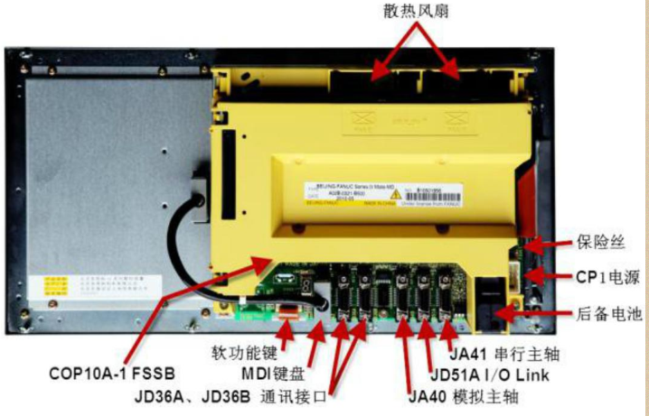
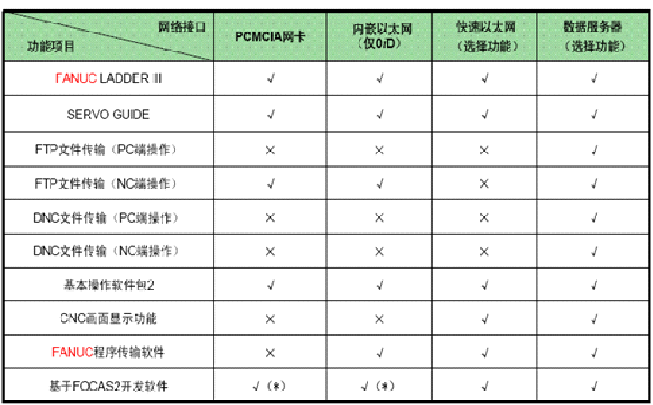

Fanuc 数控机床联网监控方案分析
原创作者：王永建(blog@wangyongjian.cn)
原文引用地址：https://blog.wangyongjian.cn
目前国内大部分生产加工企业的机床让处于单机运行模式，或者仅在下载NC程序时才偶尔与编程电脑连接，功能也仅限于下载NC程序。对于一些部署了DNC系统的机床设备往往也仅是实现了NC代码的远程下载，不能对机床的运行状态进行监控和动静态数据采集管理，无法实现集成管理，从而形成了信息化孤岛。随着生产信息化进程的推进，对数控设备进行信息化统一集中管理乃至对机床工作状态进行实时监控就变得尤为重要。本文以FANUC 系统为例探讨数控机床信息化的可行技术方案。
Fanuc数控系统与外部实现数据交换的途径有： * 通过数控系统集成的RS232C通讯接口 * 存储卡 * 磁带 * 以太网
等方式。
上述数据交换方式中采用存储卡和磁带的方式仅能实现数据的转移无法实现联网通讯，此文不做讨论。本文重点讨论通过RS232接口和以太网接口的通讯方案。
一、RS323接口的数据交换
RS232是Fanuc数据系统标配的集成通讯接口，可用于实现NC程序的下载、CNC参数的备份与恢复、PMC（Programmable Machine Controller）参数的备份与恢复、传输及在线监视PLC梯形图程序、宏指令打印等。 
图1.数控背板接口示意图
Fanuc数控系统中的标配的RS232C接口为JD36A、JD36B共2个。通常RS232接口用于DNC系统的NC程序下载，通过串口服务器接入以太网网络。
对于只有RS232接口的数控机床设备可以通过以下方法实现对机床设备联网及状态监控： 1.通过RS232接口实现程序传输，通过远程IO采集器采集机床的工作状态信号；
此方法保留现有DNC的功能，通过IO采集模块采集机床相关执行设备的动作执行状态，通常仅能采集开机、停机、故障的硬件状态信息。此方法需要对机床电控部分进行布线，且能采集的状态信号极少。
2.同RS232接口实现程序传输，通过在NC代码中添加宏指令发当前的程序执行状态通过RS232接口发送给上位管理计算机完成对机床设备的状态监控。
此方法不需要对机床进行硬件改造，仅在NC代码中加入宏指令，宏指令将状态信息通过RS232接口发送。但是次方案需要在每个NC代码中按照预定要求加入预定的宏指令。如NC代码中未添加相关的宏指令，状态监视功能将失效，且通过此方法只能实现对代码执行状态进行监视。
3.系统集成的RS232接口还可以在线监视PLC的梯形图运行状态，通过此功能可以实现对PLC内部所有寄存器的监视。可以通过此功能通过监视PLC的状态从而实现对数控机床实现运行状态监控和动态数据分析。
此方法可实现的功能最为丰富，但需要对PLC通讯协议进行解析，由于Fanuc未公开数控系统的PLC协议，需要通过在线分析相关传输数据对协议进行解析，也存在一定的工作量。
二、以太网接口的数据交换
较新的Fanuc 数控系统都配备的以太网接口，FANUC 系列数控系统的以太网硬件设备主要有快速以太网板（Fast Ethernet Board）和数据服务器板（Fast Data Server Board）两种，对应功能叫做以太网功能（Ethernet Function）和数据服务器功能（DateServer Function） 。现0i － MD 和0i － TD 系统都标配有内嵌式以太网和PCMCIA 网卡，而0i － Mate MD和0i － Mate TD 只标配PCMCIA 网卡。PCMCIA 网卡和内嵌式以太网的功能接近，只是PCMCIA 网卡不支持FANUC 程序传输软件。  图2.Fanuc几种网卡功能对比
将数控机床通过以太网与电脑连接起来，即可进行NC 程序的传输、机械的控制和运行状态的监视、机械的调整和维护。
通过以太网实现对数控设备的联网及远程监视功能可通过购买Fanuc提供的一些了管理软件实现，也可以通过Fanuc公司提供的FOCAS应用程序接口（API）进行自主编程。通过该通讯接口可实现的功能包括机床数据管理（如NC 程序、系统参数、宏变量、刀具偏置、工件坐标系偏移、螺距误差补偿等数据的读写及管理） 、CNC 显示（如主轴和进给轴数据显示、加工时间、刀具信息、坐标数据） 、状态监测（如梯形图顺序程序、机床信号、进给轴及主轴波形信号、操作及报警履历） 、在线调试（如融合FANUC LADDER和SERVO GUIDE 进行在线PMC 和伺服调试）等。 基于以太网的数控机床可以实现最为丰富的附件功能，适用于采用较新数控系统的机床设备。
三、小结
随着工业信息化进程的推进，对数控设备进行信息化统一集中管理乃至对机床工作状态进行实时监控的需求也更加强烈。本文分析集中Fuanc数控系统可行的联网监控方案，使传统的DNC 系统上增加了设备状态采集、车间工况数据采集和生产数据交换功能，实现制造企业对数控机床的集成管理。